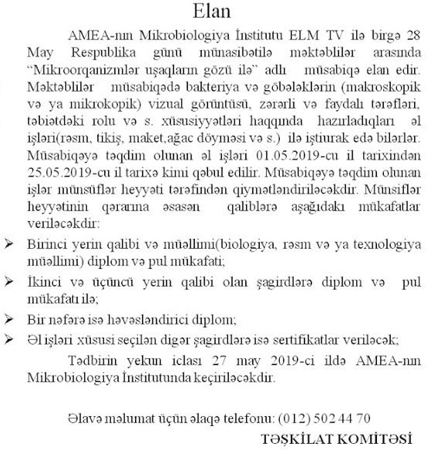

Elan
02.05.2019 11:00

AMEA-nın Mikrobiologiya İnstitutu ELM TV ilə birgə 28 May Respublika günü münasibətilə məktəblilər arasında “Mikroorqanizmlər uşaqların gözü ilə” adlı müsabiqə elan edir . Məktəblilər əlavə vəsait kimi AMEA-nın Mikrobiologiya İnstitutunun ELM TV-ilə birgə hazırladıqları aşağıda qeyd edilən videolardan da yararlana bilərlər:
Mikrobiologiya - Dərs - 1. Mikroorqanizmlərin həyatımızda yerinə yetirdikləri funksiyalar